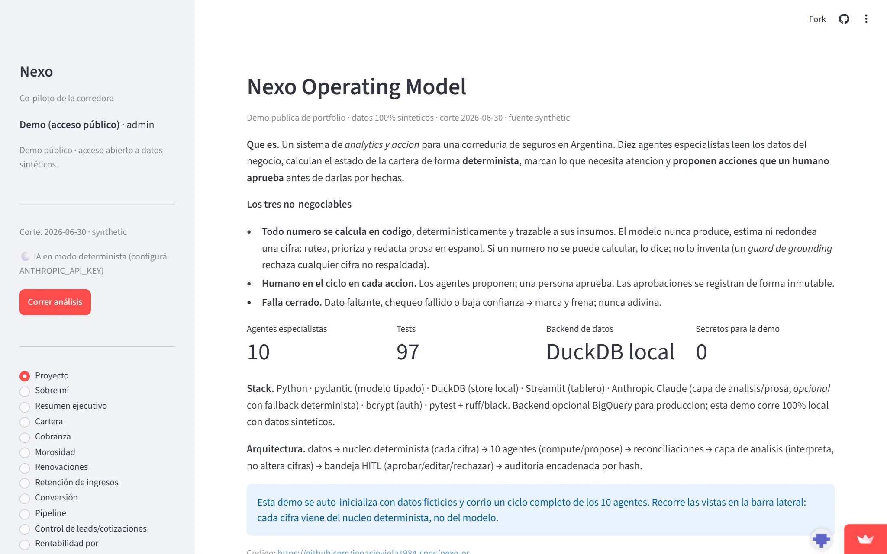

AI operating model · Insurance brokerageModelo operativo de IA · Broker de seguros
Nexo OS
An AI operating model for an Argentine insurance brokerage: ten specialist agents that read the business, compute its state deterministically, surface what needs attention, and propose actions, with a human approving every one. Un modelo operativo de IA para un broker de seguros argentino: diez agentes especialistas que leen el negocio, calculan su estado de forma determinista, muestran qué necesita atención y proponen acciones, con un humano aprobando cada una.

The problemEl problema
A brokerage needed to monitor operations deterministically, surface issues that required attention, and propose next actions, while keeping human oversight and regulatory compliance over PII-sensitive financial data. Spreadsheets and manual review didn't scale, and a black-box AI that invents figures was a non-starter in a regulated, money-moving context.Un broker necesitaba monitorear las operaciones de forma determinista, detectar lo que requería atención y proponer próximas acciones, manteniendo supervisión humana y cumplimiento regulatorio sobre datos financieros con PII. Las planillas y la revisión manual no escalaban, y una IA caja-negra que inventa cifras no era opción en un contexto regulado y con dinero en juego.
The approachEl enfoque
A human-in-the-loop operating model built on three principles:Un modelo operativo human-in-the-loop sobre tres principios:
- Deterministic computation. Every number is computed in code and traceable to its inputs. The language models route and prioritize, but never estimate or invent figures.Cómputo determinista. Cada número se calcula en código y es trazable a sus inputs. Los modelos rutean y priorizan, pero nunca estiman ni inventan cifras.
- Approval gate. Agents propose actions; a human approves before anything is recorded.Compuerta de aprobación. Los agentes proponen acciones; un humano aprueba antes de registrar nada.
- Fail-closed. Missing data or low confidence triggers a stop, never a guess.Fail-closed. Datos faltantes o baja confianza activan un freno, nunca una suposición.
A pluggable data backend (NexoRepository) cleanly isolates production from the public synthetic demo, the same code path runs against DuckDB, BigQuery, or GCS.Un backend de datos enchufable (NexoRepository) aísla producción del demo sintético público, el mismo código corre contra DuckDB, BigQuery o GCS.
ArchitectureArquitectura
- Ten specialist agents across retention, collections, delinquency, renewals, portfolio, conversion, pipeline, product profitability and commissions.Diez agentes especialistas en retención, cobranzas, mora, renovaciones, cartera, conversión, pipeline, rentabilidad de producto y comisiones.
- Deterministic core for metrics and reconciliation.Núcleo determinista para métricas y conciliación.
- HITL approval inbox, approve, edit or reject, with immutable recording.Bandeja de aprobación HITL, aprobar, editar o rechazar, con registro inmutable.
- Hash-chained audit log and multi-tenant isolation via a hard tenant boundary.Auditoría hash-encadenada y aislamiento multi-tenant con frontera dura por cliente.
- Disabled execution adapter, no external side effects without human approval.Adaptador de ejecución deshabilitado, sin efectos externos sin aprobación humana.
OutcomeResultado
Deployed in production for the brokerage at Level 2, propose + human-in-the-loop.Desplegado en producción para el broker en Nivel 2, proponer + human-in-the-loop.
The public repo ships the production-identical codebase over synthetic data, so the architecture and safety model are fully inspectable.El repo público incluye el código idéntico al de producción sobre datos sintéticos, así la arquitectura y el modelo de seguridad son completamente inspeccionables.